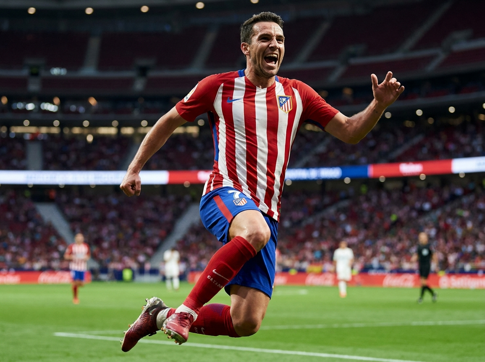
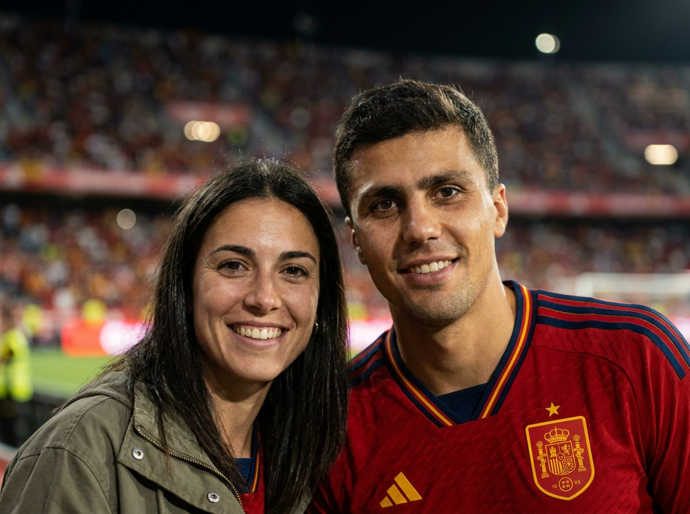
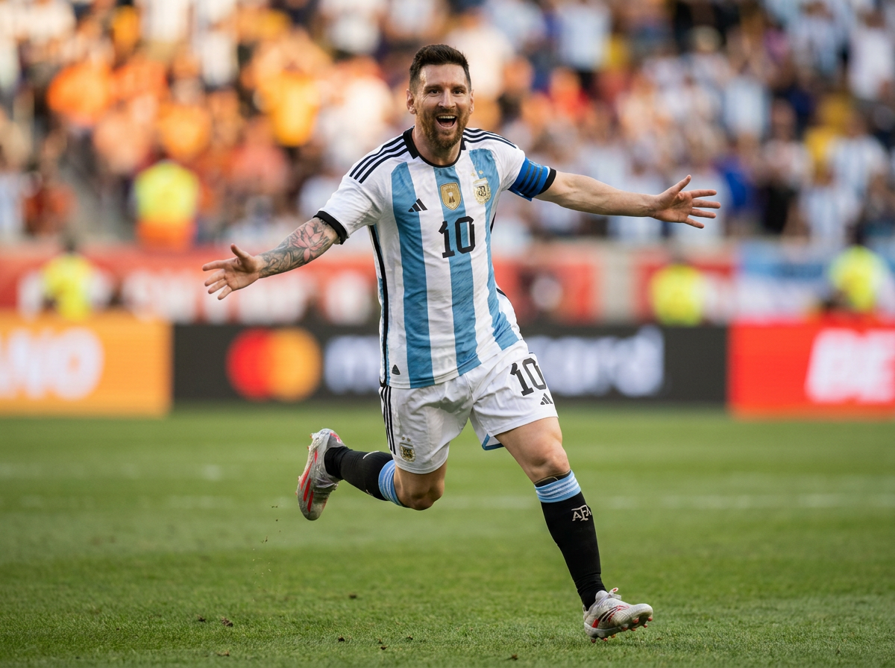
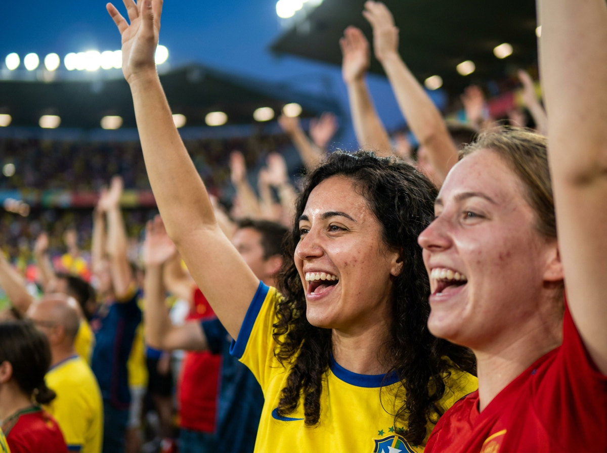
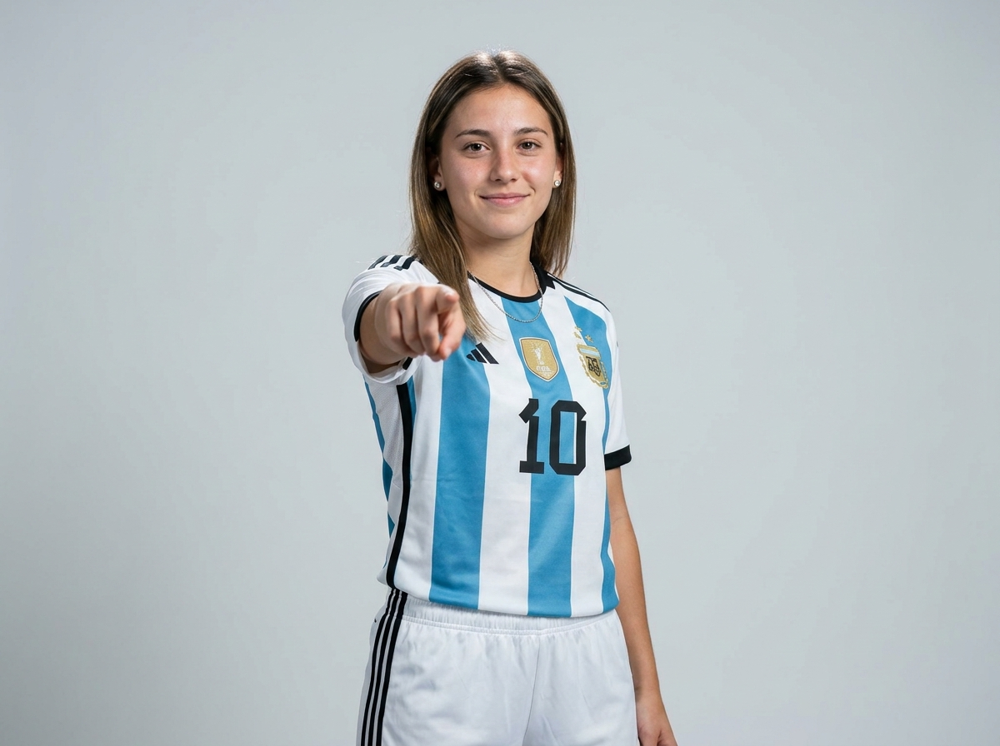
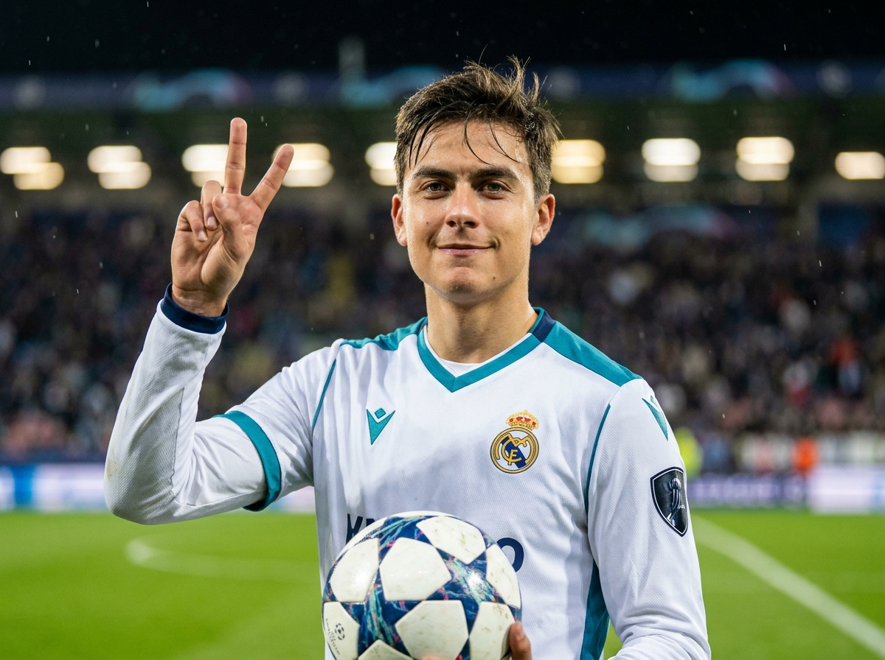
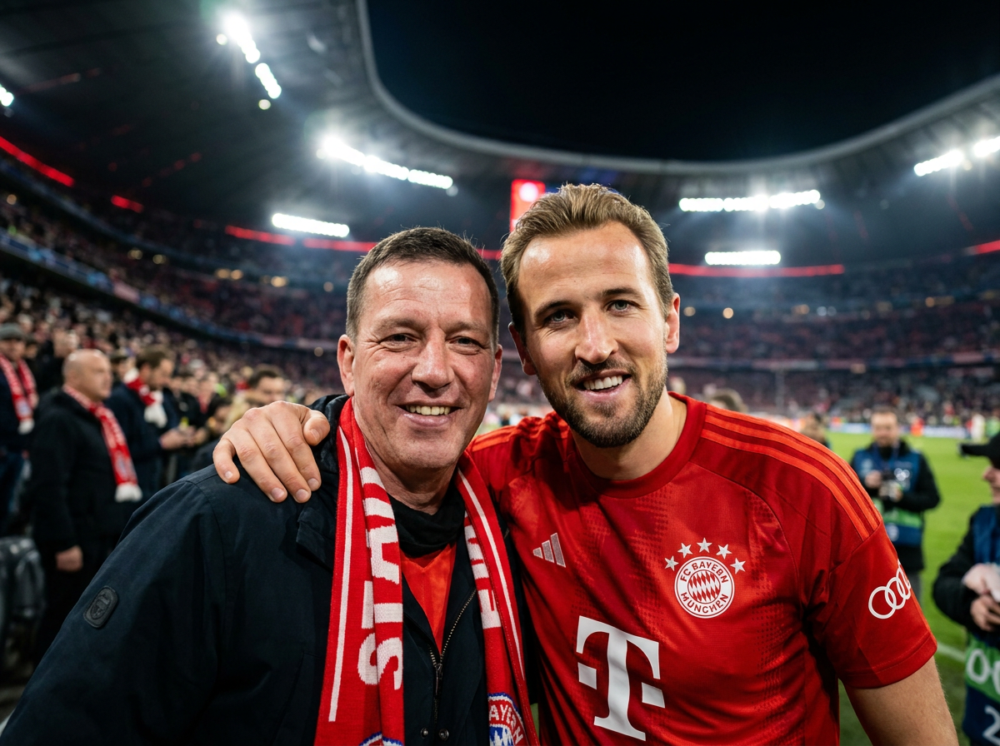
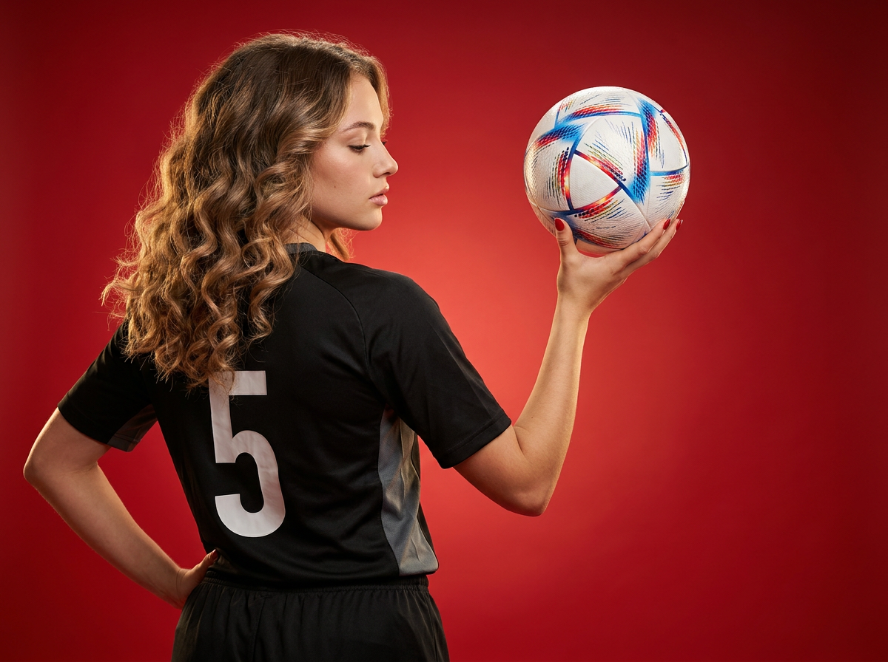
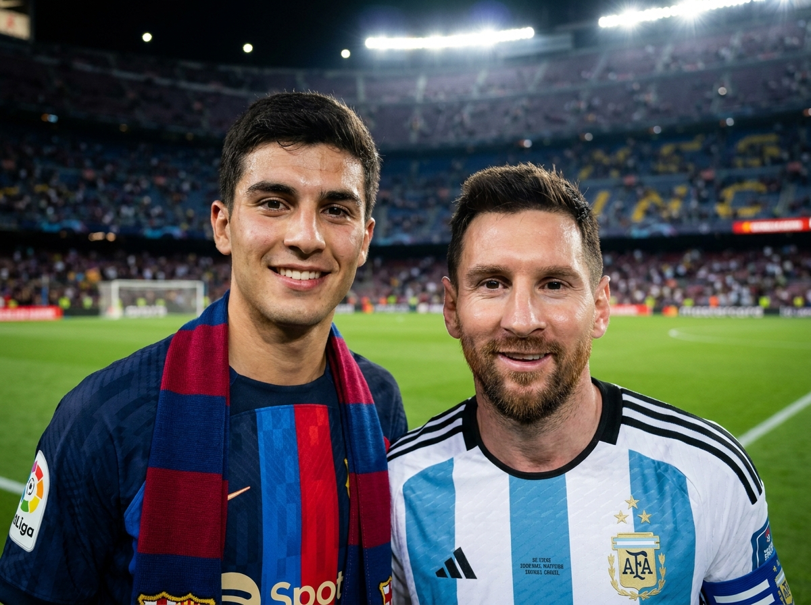
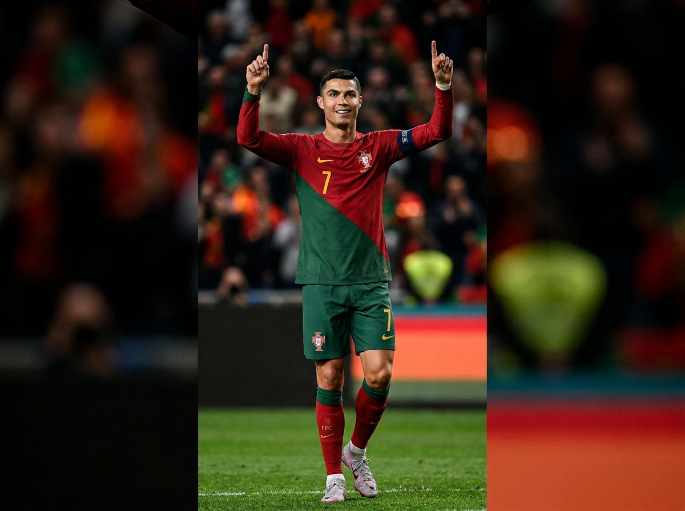

Футбольное ИИ-фото: 10 промптов для нейросети

Обычная фотография с футбольным кумиром почти недоступна: нужный матч проходит в другой стране, удачный момент длится секунду, а билет у самого поля стоит дорого. Генерация помогает собрать такой кадр из референса лица, нужной формы, света и эмоции.
В подборке — 10 готовых сценариев: празднование гола, фанатское селфи с Родри, Кейном или Месси, портрет в форме Аргентины, эффектный студийный кадр с мячом и ночной триумф игрока сборной Португалии.
Как сгенерировать такое фото: пошагово
Нужен снимок анфас при ровном свете, лицо в кадре целиком, без тёмных очков и головных уборов. Разрешение от 1000 пикселей по короткой стороне. Чем чётче исходник, тем точнее модель повторит черты.
Выберите сценарий ниже и нажмите «Копировать» — текст уйдёт в буфер целиком, вместе с командой сохранения внешности. Эта команда стоит первой строкой и отвечает за то, чтобы на выходе было ваше лицо, а не случайное.
Кнопка «Сгенерировать» рядом с каждым промптом открывает модель в новой вкладке. Nano Banana Pro работает с референсом лица — в отличие от моделей, которые генерируют портрет с нуля и узнаваемость теряют.
Промпт — в поле ввода, портрет — через загрузку референса. Порядок значения не имеет, но без референса команда сохранения внешности работать не будет: модели нечего сохранять.
Для сторис и ленты берите 9:16, для превью и обложек — 4:3. Первый результат редко идеален: если поза или свет ушли не туда, поправьте соответствующую часть промпта и запустите заново. Обычно хватает двух-трёх итераций.
10 промптов для генерации
1. Прыжок после гола
Строго сохранить внешность по загруженному референсу: черты лица, пропорции, мимику и текстуру кожи без изменений. Вертикальная фотореалистичная спортивная фотография с футбольного матча на большом стадионе. В центре — молодой футболист с лицом по загруженному референсу, естественной мимикой и узнаваемыми пропорциями. Он подпрыгнул над газоном во время празднования: одна нога поднята, стопа направлена вниз, корпус немного подан вперёд, рот открыт в крике, на лице радость и физическое напряжение, взгляд устремлён в сторону поля. Правая рука согнута и поднята вбок, словно игрок показывает жест, левая отведена назад для равновесия. Кисти и пальцы анатомически правильные. На нём форма с красно-белыми вертикальными полосами, тонкой синей окантовкой ворота и планки, круглой или овальной эмблемой на груди и спонсорским блоком без читаемых надписей. Реалистичный газон, прожекторы, размытые трибуны, спортивная динамика, высокая детализация, натуральная кожа, без логотипов и артефактов.
2. Селфи с Родри

Строго сохранить внешность по загруженному референсу: черты лица, пропорции, мимику и текстуру кожи без изменений. Документальная фотография с футбольного стадиона во время вечернего матча: девушка с лицом по загруженному референсу стоит рядом с Родри, обе фигуры хорошо видны, они дружелюбно улыбаются и смотрят прямо в объектив. Родри одет в форму сборной Испании. Вокруг — яркие стадионные прожекторы, заполненные трибуны и мягкие световые пятна на заднем плане. Съёмка выглядит как естественный candid-кадр, без постановочной искусственности: реалистичная кожа, точные черты лица, живые эмоции, аккуратные пропорции. Небольшая глубина резкости отделяет героинь от фона, выраженное боке. Параметры съёмки: объектив 85 мм, диафрагма f/1.8, высокая детализация, фотореалистичный результат. Не добавлять текст, водяные знаки, читаемые буквы, бренды, искажённые лица, лишние пальцы, деформированные кисти, пластиковую кожу, CGI-эффект, мультяшный стиль и цифровые артефакты.
3. Полёт после победы

Строго сохранить внешность по загруженному референсу: черты лица, пропорции, мимику и текстуру кожи без изменений. Фотореалистичный вертикальный кадр со стадиона в момент победного празднования. Мужчина-футболист с лицом по загруженному референсу улыбается, слегка приоткрыв рот, и выглядит эйфорично. Он движется по полю в праздничном прыжке: обе руки широко разведены, будто игрок летит навстречу трибунам, корпус наклонён вперёд, правая нога поднята, левая уверенно опирается на газон. Пальцы, кисти и суставы выглядят анатомически корректно. На футболисте форма сборной Аргентины — фактурная спортивная ткань с голубыми и белыми вертикальными полосами, крупная цифра «10» на груди, полосатые элементы и звёздочки-значки на рукавах без мелких читаемых надписей. Такая же цифра видна спереди на шортах. Стадион освещён мощными прожекторами, фон слегка размыт, в воздухе ощущается энергия матча. Натуральная кожа, резкие детали лица и формы, реалистичное движение, без лишних пальцев и искажений.
4. Эмоции двух фанаток

Строго сохранить внешность по загруженному референсу: черты лица, пропорции, мимику и текстуру кожи без изменений. Крупный вертикальный спортивный портрет двух фанаток у кромки поля во время футбольного матча. Лица обеих девушек соответствуют загруженным референсам, кожа имеет естественную текстуру. Они стоят очень близко к объективу, смеются и кричат от радости: рты открыты, глаза блестят, эмоции искренние и немного хаотичные, как в настоящей фанатской съёмке. Обе подняли руки вверх и машут. Девушка ближе к центру одета в жёлтую спортивную форму с синей окантовкой, небольшой эмблемой без читаемого логотипа и абстрактным нагрудным номером. Справа находится вторая женщина в красной форме без брендов и надписей, с нечитаемым номером, лёгким макияжем и аккуратными чертами лица. На заднем плане — газон, прожекторы и размытые трибуны. Реалистичная цветопередача, естественный свет, высокая детализация, живой репортажный характер, правильная анатомия рук и пальцев.
5. Портрет в форме Аргентины

Строго сохранить внешность по загруженному референсу: черты лица, пропорции, мимику и текстуру кожи без изменений. Вертикальный фотореалистичный студийный портрет молодой девушки с лицом по загруженному референсу. Она стоит прямо, корпус слегка развёрнут в сторону, голова немного наклонена к камере, на губах мягкая естественная улыбка. Волосы с натуральным блеском уложены с пробором ближе к центру. Макияж лёгкий: ровный тон кожи, аккуратно оформленные брови, выразительный взгляд. На ушах маленькие серьги-гвоздики, на шее тонкая цепочка. Одна рука вытянута вперёд и указывает на зрителя; кисть показана крупнее, большой палец и остальные пальцы имеют правильную анатомию, без деформаций. Вторая рука расслаблена у бедра и немного отведена. На девушке футболка сборной Аргентины с бело-голубыми вертикальными полосами, чёрной окантовкой ворота и рукавов, стилизованной крупной цифрой «10» на груди без дополнительных читаемых надписей. Мягкий студийный свет, чистый фон, резкие детали лица и ткани, вертикальная композиция.
6. Жест победы с мячом

Строго сохранить внешность по загруженному референсу: черты лица, пропорции, мимику и текстуру кожи без изменений. Вертикальная фотореалистичная спортивная фотография, крупный план футболиста по грудь или до пояса. Молодой мужчина с лицом по загруженному референсу стоит на поле после удачного эпизода, смотрит прямо в камеру и улыбается с уверенным, радостным выражением. Волосы слегка растрёпаны сверху, брови выразительные. Правая рука поднята возле плеча и складывается в жест V: указательный и средний пальцы вытянуты, остальные согнуты, кисть выглядит естественно. Левой рукой он удерживает футбольный мяч на уровне груди или живота. На нём светлая форма в стиле «Реал Мадрид»: белая ткань, бирюзовые и тёмно-синие вставки, контрастный кант на воротнике и рукавах, длинные рукава. На груди расположены круглая эмблема и клубный шеврон, переданные общими формами без читаемых логотипов и букв. Фон — футбольное поле с мягким размытием, естественный стадионный свет, натуральная кожа, точные руки и пальцы, высокая детализация.
7. Фото с Гарри Кейном

Строго сохранить внешность по загруженному референсу: черты лица, пропорции, мимику и текстуру кожи без изменений. Фотореалистичный вечерний кадр на футбольном стадионе во время матча. Парень с лицом по загруженному референсу стоит рядом с Гарри Кейном; оба улыбаются и смотрят в объектив, поза дружелюбная и непринуждённая, как у случайной фотографии болельщика после важного эпизода. Кейн одет в форму немецкого клуба «Бавария». На заднем плане видны трибуны, залитые ярким светом прожекторов, но они мягко уходят в расфокус. Сохранить естественный цвет кожи, индивидуальные черты лиц, реалистичные пропорции и правдоподобный масштаб фигур. Атмосфера документальной съёмки candid, малая глубина резкости, выразительное боке. Использовать объектив 85 мм и диафрагму f/1.8, добиться высокой детализации и ultra realistic photorealistic-эффекта. Исключить текст, водяные знаки, читаемые буквы и логотипы, размытые лица, лишние пальцы, неправильные кисти, двойников, пластиковую кожу, CGI, мультяшную стилизацию и артефакты.
8. Силуэт с футбольным мячом

Строго сохранить внешность по загруженному референсу: черты лица, пропорции, мимику и текстуру кожи без изменений. Вертикальная фотореалистичная студийная фотография молодой женщины, стоящей спиной к камере. Голова повернута влево, виден профиль; глаза прикрыты или полуприкрыты, губы чуть разомкнуты, выражение спокойное и задумчивое. Волосы уложены крупными свободными локонами, имеют естественный объём и мягкие блики в технике балаяж или омбре. Правая рука поднята вверх и удерживает футбольный мяч возле головы или плеча, мяч расположен справа от головы в кадре. Левая рука согнута и упирается в бедро или талию, подчёркивая силуэт и создавая уверенную позу. На видимой руке аккуратный красный маникюр, пальцы правильной формы. Мяч современного дизайна, белый с красными и синими элементами. Мягкий направленный студийный свет подчёркивает волосы, плечи и контуры фигуры, фон чистый и нейтральный. Реалистичная кожа, точная анатомия, высокая детализация, без текста, логотипов и деформаций.
9. Встреча с Месси

Строго сохранить внешность по загруженному референсу: черты лица, пропорции, мимику и текстуру кожи без изменений. Фотореалистичная фотография на стадионе после футбольного матча. Фанат в клубной форме и шарфе с цветами команды улыбается рядом с Лионелем Месси. Лицо болельщика передано по загруженному референсу с естественными чертами и пропорциями. Месси стоит рядом, дружелюбно смотрит в камеру и одет в современную футбольную форму; его поза слегка напоминает состояние игрока сразу после матча. Вокруг вечерняя атмосфера, яркий стадионный свет, мягкое боке и размытые трибуны. Кожа выглядит натурально, цвета реалистичные, лица и ткань формы хорошо проработаны. Использовать глубину резкости, объектив 85 мм и диафрагму f/1.8, получить высокую детализацию и photorealistic ultra realistic-рендер. Не добавлять надписи, текст, водяные знаки, логотипы, мультяшный стиль, CGI, размытие лица, плохую анатомию, лишние пальцы, деформированные руки, неправильные пропорции и цифровые артефакты.
10. Триумф сборной Португалии

Строго сохранить внешность по загруженному референсу: черты лица, пропорции, мимику и текстуру кожи без изменений. Вертикальная фотореалистичная спортивная фотография ночного футбольного матча. В центре поля стоит атлетичный игрок сборной Португалии, созданный по лицевому референсу: он уверенно улыбается и смотрит прямо в камеру. Это момент триумфа после гола или победы. Обе руки подняты вверх, локти согнуты симметрично, указательные пальцы направлены к небу в жесте «номер один». Кисти и пальцы анатомически корректные, без лишних элементов и деформаций. На футболисте форма сборной Португалии с диагональным распределением цветов: красная верхняя часть, зелёная нижняя, тонкие декоративные линии, тёмные воротник и окантовка. На груди крупная жёлтая цифра «7» с чётким контуром, без читаемых дополнительных надписей и брендов. Ночной стадион освещён мощными прожекторами, газон насыщенно-зелёный, трибуны и фон слегка размыты. Натуральная кожа, динамичная спортивная атмосфера, высокая детализация, реалистичные материалы.
Что важно учесть в этом стиле
Футбольное ИИ-фото держится на трёх вещах: понятной позе, правдоподобном свете и узнаваемой фактуре формы. Сначала задайте вертикальный кадр, точку съёмки и действие — например, прыжок после гола или жест победы. Затем добавляйте эмоцию, фон и детали одежды.
Для портретов полезно указывать объектив 85 мм и диафрагму f/1.8: лицо остаётся главным, а трибуны превращаются в мягкое боке. В промпте лучше писать «без читаемых логотипов и надписей», иначе нейросеть часто создаёт случайные буквы и странные эмблемы.
Идеи для вариаций
- Замените вечерние прожекторы на пасмурный дневной свет и мокрый газон после дождя.
- Сделайте кадр с нижней точки, чтобы прыжок и поднятые руки выглядели мощнее.
- Добавьте дым от фанатского сектора, конфетти или флаги на дальних трибунах.
- Попросите нейросеть показать момент до празднования: игрок готовится пробить по воротам.
- Смените 85 мм на 35 мм, если нужен более широкий репортажный план с атмосферой стадиона.
- Для серии кадров оставьте одинаковыми форму, цвет света и положение камеры, меняя только эмоцию.
Как собрать свой промпт
Начните с формата и жанра: «вертикальная фотореалистичная спортивная фотография». После этого опишите героя, локацию и действие. Для внешности укажите загруженный референс, а затем перечислите эмоцию, направление взгляда, положение рук и ног. Чем конкретнее поза, тем меньше случайных жестов.
Следующий слой — одежда и свет: цвета формы, номер, материал ткани, прожекторы, время суток, степень размытия фона. Завершите техническими параметрами, например «85 мм, f/1.8, высокая детализация», и негативными ограничениями: без текста, водяных знаков, лишних пальцев, деформированных рук и пластиковой кожи. Для стабильного результата сделайте 4–8 генераций, меняя по одному параметру.
Ошибки, из-за которых кадр не получается
- Слишком общая поза. Фраза «футболист празднует» не объясняет, где находятся руки, ноги и корпус.
- Перегруженная форма. Мелкие логотипы, длинные надписи и сложные эмблемы часто превращаются в нечитаемые символы.
- Нет указания на источник света. Без прожекторов и времени суток лицо может выглядеть плоским, а стадион — нарисованным.
- Смешение планов. Крупный портрет, прыжок в полный рост и селфи требуют разных расстояний до камеры.
- Игнорирование рук. Жесты V и поднятые пальцы лучше описывать отдельно и дополнять запретом на лишние пальцы.
- Слишком сильная стилизация. Слова вроде «идеальный герой» нередко дают пластиковую кожу и CGI-эффект вместо репортажного фото.
Частые вопросы
Как сделать такое ИИ-фото бесплатно?
Попробуйте Kandinsky, Шедеврум, Krea AI или Arena.ai: у них есть бесплатные режимы, но лимиты, очередь и качество меняются. Главная проблема — работа с референсом лица: одни сервисы принимают изображение напрямую, другие ограничивают его или хуже сохраняют сходство. Для точного результата может понадобиться несколько попыток и ручная проверка рук, формы и надписей.
Как сохранить сходство с человеком на референсе?
Используйте чёткий портрет анфас или в лёгком повороте, без очков, сильных теней и фильтров. В промпте отдельно опишите естественную мимику и запрет на изменение формы глаз, носа, губ и овала лица. Если сервис позволяет регулировать силу референса, начните со среднего значения: слишком слабое даст другого человека, слишком сильное может сломать позу.
Почему нейросеть искажает футбольную форму?
Модели плохо рисуют мелкие буквы, гербы и сложные паттерны. Описывайте крупные цветовые блоки, полосы, номер и форму воротника, а логотипы просите сделать абстрактными или нечитаемыми. Если нужен конкретный дизайн, проще дорисовать эмблему и надпись после генерации в редакторе.
Как получить естественное фото со звездой футбола?
Задайте документальный стиль, candid-съёмку, объектив 85 мм, диафрагму f/1.8, вечерний стадион и мягкое боке. Опишите, куда смотрят оба человека и как стоят их плечи. Для правдоподобия не перегружайте сцену деталями: один фон, понятный источник света и спокойная дружелюбная поза обычно работают лучше сложной композиции.